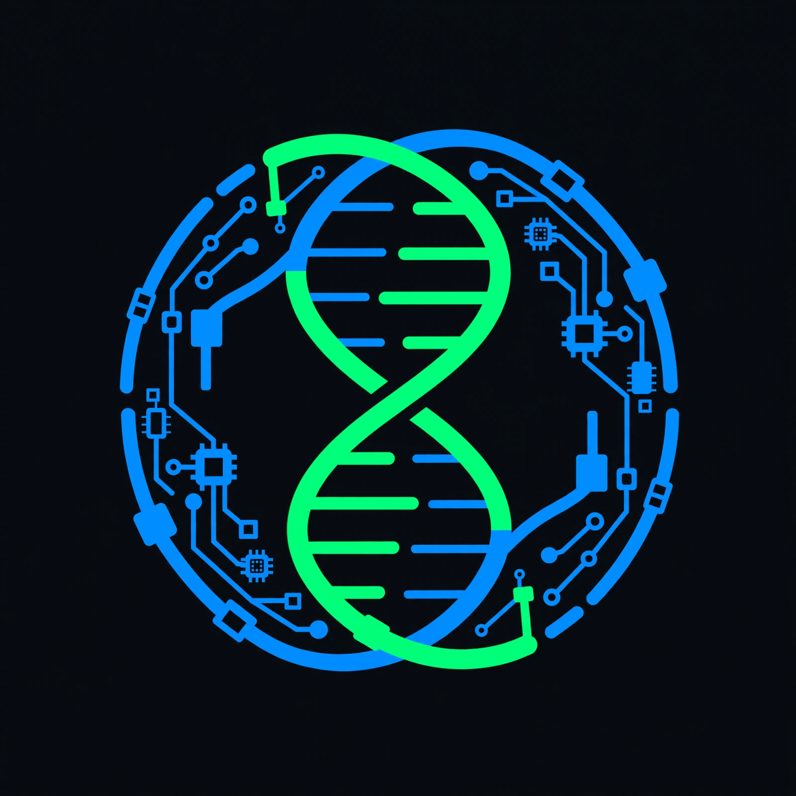

A 12-layer self-evolving AI platform for bioinformatics. The FASTA parser watches your data live and evolves itself nightly at 02:00 via LLM mutation.
Watches fasta_inbox/ every 10s. Detects spaces, lowercase, Uniprot format. Emergency heal in milliseconds.
Builds tests from real failures. 8 parsers compete, 10 generations. Only if better → replaces best_parser.py
Layer 09 Neuro evolves prompts. Shorter + better. Fitness = code_fitness / tokens. Example: 0.45 → 1.10
Genom, Proteom, Membran, Immunsystem, Neuro, Evolution, Phänotyp - organic code principles.
docker compose up -d → organism + ollama (codellama:7b) + API. 30 seconds to alive.
Real evolution run: Adam weak parser evolved to regex + upper + generator + robust in 3 generations.
★ = self-evolvable via Layer 11
git clone https://github.com/oghighzenberg1982/organic-ai-os.git
cd organic-ai-os
docker compose up --build -d
docker exec organic_ollama ollama pull codellama:7b
cp *.fasta ./fasta_inbox/
docker logs -f organic_ai_organism
# 👁️ SCAN ... ✅ 2 records
# 🌙 EVOLUTION ... 🏆 WINNER Fit=1.19
curl http://localhost:8000/memory | jq
curl http://localhost:8000/best_parser | jq -r .code > my_parser.py